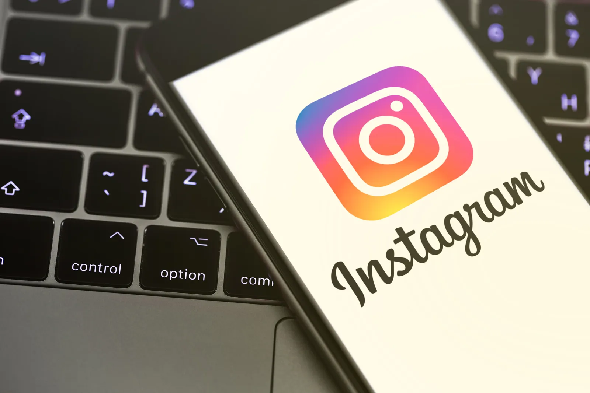

INSTAGRAM: NEVINNÁ SOCIÁLNA SIEŤ, ALEBO DIGITÁLNA PASCA KTORÁ NÁS NECHCE PUSTIŤ Z JEJ ZOVRETIA?
Prečo máme stále pocit, že Instagram jednoducho nechceme zavrieť a trávime na ňom viac času, než sme najprv plánovali? Je to naozaj len obyčajná ľudská slabá vôľa, alebo za tým stojí niečo oveľa, oveľa väčšie? Instagram je dnes súčasťou každodenného života miliónov ľudí po celom svete. Otvoríme si ho ráno po zobudení, počas prestávky v škole, v práci, doma cez chvíľku voľna a často aj pred spaním v posteli. Pôvodne sme chceli len odpísať na správu alebo pozrieť fotografiu či video od kamaráta. Zrazu prešla hodina a my stále len tak posúvame obrazovku na ďalšie video. Náhoda? Alebo ide o tajný systém, o ktorom bežný používateľ takmer nič nevie?
ALGORITMY, KTORÉ NÁS VŠETKÝCH POZNAJÚ LEPŠIE, AKO SA NA PRVÝ POHĽAD ZDÁ?
Instagram tvrdí, že jeho algoritmy majú používateľom zobrazovať len obsah, ktorý ich najviac zaujíma, ako je to v ňom na viacerých miestach napísané. Na prvý pohľad ide o super funkciu. Prečo by sme totiž mali sledovať príspevky, ktoré nás nebavia, a len by sme ich preskočili? Problém však nastáva v chvíli, keď zistíme, koľko osobných informácií o nás táto aplikácia získava bez nášho vedomia. Každé kliknutie na like a každý komentár, každé krátke zastavenie sa pri vtipnom videu či každé preskočenie príspevku môže systému napovedať niečo nové - toto používateľa baví, toto nezaujalo... Algoritmus takto zisťuje, aké príspevky máme záujem pozerať. A práve tu sa vynára otázka: Ak Instagram dokáže tak presne odhadnúť naše myšlienky, nemôže zároveň ovplyvniť aj to, ako dlho na ňom zostaneme, a ako často ho otvoríme???? Niektorí používatelia si všimli jednu zvláštnosť. Pozrú si jediné video o určitej téme, pozastavia sa nad ním len malú chvíľku a v priebehu niekoľkých minút sa ich celá stránka zaplaví podobným obsahom. Akoby Instagram presne vedel, čo chcú tej chvíli vidieť. Možno je to iba dôsledok moderných technológií, ktoré len majú dobrú schopnosť odhadovať určité okolnosti. Alebo ide o oveľa sofistikovanejší spôsob, ako si udržať našu pozornosť?
NEKONEČNÉ SCROLLOVANIE: KTO VLASTNE O JEHO DĹŽKE ROZHODUJE?
Jednou z najvýraznejších a najznámejších funkcií Instagramu je nekonečné scrollovanie, totiž obsah, ktorý nikdy nekončí. Na rozdiel od bežných stránok, ktoré majú jasný koniec, Instagram nám neustále ponúka ďalší a ďalší obsah, len aby sme pozerali ďalej. Stačí jednoduchý pohyb prstom smerom hore. Zaujímavé je, že nikdy presne nevieme, čo sa objaví na ďalšej obrazovke, aký bude ďalší príspevok. Môže to byť vtipné video, šokujúca informácia alebo fotka, ktorý nás emocionálne zasiahne, ukážka z dokonalého života influencerov alebo politické a sociálne názory, ktoré sú nám blízke. Práve táto nepredvídateľnosť môže byť jedným z dôvodov, prečo je také ťažké aplikáciu zavrieť okamžite v chvíli, keď si pôvodne povieme. Človek si zakaždým hovorí: Už len posledné video... A potom je to zrazu ďalšie. A ešte jedno. Je možné, že Instagram si všimol túto vlastnosť ľudského správania a využíva ju vo svoj prospech, aby o nás zistil informácie tak, aby sme o tom nevedeli?
JE REÁLNYM CIEĽOM SPOKOJNÝ POUŽÍVATEĽ, ALEBO SÚ V HRE LEN PENIAZE?
Ak platforma zarába na reklamách a čím dlhšie ju používame, tým viac reklám od sponzorov môžeme vidieť, potom je logické položiť si otázku, či je skutočným cieľom naozaj iba spokojný používateľ, alebo používateľ, ktorý sa od obrazovky už nedokáže odtrhnúť. A nakoniec je cieľ len zarobiť. Nie je žiadnym tajomstvom, že veľké spoločnosti investujú obrovské množstvo peňazí do vývoja algoritmov. Tieto systémy majú analyzovať správanie ľudí a prispôsobovať sa mu. Instagram pritom nie je jediný, kto podobné technológie využíva. Čo však zostáva pre mnohých používateľov nejasné, je presná hranica medzi personalizáciou obsahu a ovplyvňovaním bežného života. Kedy nám aplikácia iba ponúka obsah, ktorý nás zaujíma, a kedy sa už snaží ovplyvniť a zmeniť naše správanie? Možno si myslíme, že máme nad svojím časom na sociálnych sieťach úplnú kontrolu a neriešime to. No ak je každý príspevok starostlivo vybraný tak, aby nás zaujal, rozhodujeme sa ešte stále úplne slobodne?
JE TO EŠTE STÁLE SLOBODNÁ VÔĽA?
Instagram nemusí byť žiadnou tajnou organizáciou, aby dokázal výrazne ovplyvniť naše každodenné návyky. Stačí mu technológia, množstvo údajov a vznikne zložitý systém, ktorý sa neustále zdokonaľuje. Možno teda nejde o obyčajnú sociálnu sieť, na ktorej si vymieňame a pozeráme fotografie a videá, komunikujeme s blízkymi, a na ktorej bezpečne trávime úsek nášho voľného času. Možno je to priestor, v ktorom sa naša pozornosť stala jednou z najcennejších vecí. Zatiaľ čo my nevedomky sledujeme obrazovku mobilu, niekto, alebo niečo o nás neustále získava nové informácie, s ktorými nevedno čo ďalej robí. Je to vôbec stále bezpečné? A tak nabudúce, keď otvoríme Instagram s úmyslom stráviť na ňom iba dve minútky, mali by sme sa zamyslieť nad jednou otázkou: Otvorili sme aplikáciu preto, že sme sami chceli, alebo preto, že systém presne vedel, ako nás k tomu prinútiť?